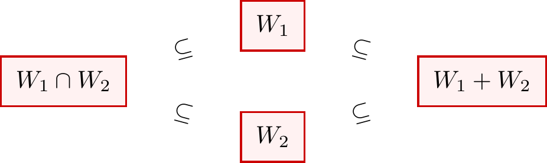

1.7 Sums of Subspaces
In the previous sections, we studied intersections and unions of subspaces. While the intersection of two subspaces is always a subspace, the union typically is not. This raises a natural question: what is the “right” way to combine two subspaces into a larger one?
The answer is the sum of subspaces. Given two subspaces \(W_1\) and \(W_2\), their sum \(W_1 + W_2\) consists of all vectors that can be written as \(\w_1 + \w_2\) for some \(\w_1 \in W_1\) and \(\w_2 \in W_2\). This construction always yields a subspace—in fact, it is the smallest subspace containing both \(W_1\) and \(W_2\).
A particularly nice situation occurs when \(W_1\) and \(W_2\) have only the zero vector in common. In this case, their sum is called a direct sum, and every vector in the sum can be decomposed uniquely into a piece from \(W_1\) and a piece from \(W_2\). Direct sums are fundamental in decomposing vector spaces into simpler, independent components.
1.7.1. Definition and Properties
Let \(W_1\), \(W_2\) be subspaces of a vector space \(V\). Then we define \[ W_1 + W_2 \coloneqq \left\{ \w_1 + \w_2 : \w_1 \in W_1 \text{ and } \w_2 \in W_2 \right\}. \]
\(W_1 + W_2\) is a subspace of \(V\). Furthermore, this is the smallest subspace containing both \(W_1\) and \(W_2\).
Proof. To prove that \(W_1 + W_2\) is a subspace \(V\). We prove that three conditions of the subspace test:
Non-emptiness: As \(W_1\), \(W_2\) are subspaces, they both contains \(\mathbf{0}\). And since \(\mathbf{0} = \mathbf{0}_{W_1} + \mathbf{0}_{W_2}\), therefore \(W_1 + W_2\) is non-empty.
Closed under addition: Let \(\a, \b \in W_1 + W_2\). Then we have \[ \begin{dcases} \a = \w_1 + \w_2, & \text{ for some } \w_1 \in W_1, \w_2 \in W_2 \\ \b = \w_1' + \w_2', & \text{ for some } \w_1' \in W_1, \w_2' \in W_2 \\ \end{dcases} \] Then \(\a + \b = \underbrace{(\w_1 + \w_1')}_{\in W_1} + \underbrace{(\w_2 + \w_2')}_{W_2} \in W_1 + W_2\). So \(W_1 + W_2\) is closed under addition.
Closed under scalar multiplication: Let \(\a \in W_1 + W_2\), and \(\lambda \in F\). Then we have \(\a = \w_1 + \w_2\) for some \(\w_1 \in W_1, \w_2 \in W_2\). Then \(\lambda \a = \underbrace{\lambda \w_1}_{\in W_1} + \underbrace{\lambda \w_2}_{\in W_2} \in W_1 + W_2\). So \(W_1 + W_2\) is closed under scalar multiplication.
This concludes that \(W_1 + W_2\) is a subspace.
To prove that \(W_1 + W_2\) is the smallest subspace containing both \(W_1\) and \(W_2\), we first prove that it actually contains \(W_1\) and \(W_2\), then we prove that it is the smallest subspace of \(V\) containing so.
Containment: Since \(W_1\) and \(W_2\) are subspaces, they both contain the zero vector \(\mathbf{0}\). Since for any \(\w_1 \in W_1\), we can write \(\w_1 = \w_1 + \mathbf{0}\), by \(\mathbf{0} \in W_2\), we have \(\w_1 \in W_1 + W_2\). Thus \(W_1 \subseteq W_1 + W_2\). The same logic applies to \(W_2\) therefore \(W_2 \subseteq W_1 + W_2\).
Minimality: Let \(U\) be any subspace of \(V\) such that \(W_1 \subseteq U\) and \(W_2 \subseteq U\). We want to show that \(W_1 + W_2 \subseteq U\). Take any element \(W_1 + W_2\). By definition \(\v = \w_1 + \w_2\) for some \(\w_1 \in W_1\) and \(\w_2 \in W_2\). Because \(W_1 \subseteq U\), then \(\w_1 \in U\). Similarly, because \(W_2 \subseteq U\), then \(\w_2 \in U\). At last, since \(U\) is a subspace, it is closed under addition. Therefore \[ \w_1 + \w_2 \in U \implies \v \in U. \] This concludes that \(W_1 + W_2\) is the smallest subspace of \(V\) containing \(W_1\) and \(W_2\).
1.7.2. Dimension of \(W_1 + W_2\)
Let \(V\) be a finite-dimensional vector space, and let \(W_1\), \(W_2\) subspaces of \(V\). Then \[ \dim(W_1 + W_2) = \dim (W_1) + \dim (W_2) - \dim(W_1 \cap W_2). \]
Proof.

We use the above diagram to build intuition for the proof.
Let \(n = \dim(W_1 \cap W_2)\). Let \(B = \{ \b_1, \dots, \b_n \}\) be a basis of the intersection \(W_1 \cap W_2\).
Since \(B\) is a linearly independent subset of both \(W_1\) and \(W_2\), by the Basis Extension Theorem (Theorem 1.6.5), we can extend it to form bases for both subspaces:
For \(W_1\): Extend \(B\) with \(\{ \s_1, \dots, \s_p \}\) such that \(B_1 = \{ \b_1, \dots, \b_n, \s_1, \dots, \s_p \}\) is a basis of \(W_1\). Note that \(\dim(W_1) = n + p\).
For \(W_2\): Extend \(B\) with \(\{ \t_1, \dots, \t_q \}\) such that \(B_2 = \{ \b_1, \dots, \b_n, \t_1, \dots, \t_q \}\) is a basis of \(W_2\). Note that \(\dim(W_2) = n + q\).
Claim. The set \(S = \{ \b_1, \dots, \b_n, \s_1, \dots, \s_p, \t_1, \dots, \t_q \}\) is a basis of \(W_1 + W_2\).
Proof.
\(S\) spans \(W_1 + W_2\)
Let \(\w \in W_1 + W_2\). By definition, \(\w = \w_1 + \w_2\) for some \(\w_1 \in W_1, \w_2 \in W_2\). Since \(B_1\) spans \(W_1\) and \(B_2\) spans \(W_2\), both \(\w_1\) and \(\w_2\) can be written as linear combinations of vectors in \(S\). Thus, their sum \(\w\) is also in \(\Span(S)\).
\(S\) is Linearly Independent
\[ \sum_{i=1}^n \alpha_i \b_i + \sum_{j=1}^p \beta_j \s_j + \sum_{k=1}^q \gamma_k \t_k = \mathbf{0} \](1.7.1)Rearrange the equation to isolate the terms involving \(\t_k\): \[ \v \coloneqq \sum_{i=1}^n \alpha_i \b_i + \sum_{j=1}^p \beta_j \s_j = - \sum_{k=1}^q \gamma_k \t_k \]
Observe the vector \(\v\). From the LHS, we have \(\v \in W_1\). From the RHS, we have \(\v \in W_2\). Therefore, \(\v \in W_1 \cap W_2\).
Since \(\v \in W_1 \cap W_2\), it can be written uniquely as a linear combination of the basis \(B\) of the intersection: \[ \v = \sum_{i=1}^n \delta_i \b_i \]
Equating this with the RHS expression of \(\v\): \[ \sum_{i=1}^n \delta_i \b_i = - \sum_{k=1}^q \gamma_k \t_k \implies \sum_{i=1}^n \delta_i \b_i + \sum_{k=1}^q \gamma_k \t_k = \mathbf{0}. \]
The set \(B_2 = \{ \b_1, \dots, \b_n, \t_1, \dots, \t_q \}\) is a basis of \(W_2\) and is therefore linearly independent. This forces all coefficients to be zero. Specifically, all \(\gamma_k = 0\).
Substitute \(\gamma_k = 0\) back into Eq. 1.7.1: \[ \sum_{i=1}^n \alpha_i \b_i + \sum_{j=1}^p \beta_j \s_j = \mathbf{0} \]
Since \(B_1 = \{ \b_1, \dots, \b_n, \s_1, \dots, \s_p \}\) is a basis of \(W_1\), it is linearly independent. This forces all \(\alpha_i = 0\) and all \(\beta_j = 0\).
Since all \(\alpha, \beta, \gamma\) are zero, \(S\) is linearly independent.
Use dimension counting, since \(S\) is a basis for \(W_1 + W_2\): \[\begin{align*} \dim (W_1 + W_2) &= |S| \\ &= n + p + q \\ &= (n + p) + (n + q) - n \\ &= \dim(W_1) + \dim(W_2) - \dim(W_1 \cap W_2). \end{align*}\]
Remark. Counter-example for 3 Subspaces
It is a coincidence that this formula resembles the “Inclusion-Exclusion Principle” from set theory. This intuition fails for three or more subspaces. The formula: \[\begin{align*} \dim (W_1 + W_2 + W_3) &\neq \sum \dim(W_i) - \sum \dim (W_i \cap W_j) + \dim (W_1 \cap W_2 \cap W_3) \end{align*}\]
Counter-example: Consider three distinct lines through the origin in \(\mathbb{R}^2\) (e.g., x-axis, y-axis, and \(y=x\)).
- LHS: The sum of three lines fills the plane, so dimension is 2.
- RHS: \(1+1+1 - (0+0+0) + 0 = 3\).
Since \(2 \neq 3\), the formula is false.
1.7.3. Direct Sum of Two Subspaces
Let \(W_1\), \(W_2\) be subspaces of a vector space \(V\). If \(W_1 \cap W_2 = \{ \mathbf{0} \}\), then we write \(W_1 + W2\) as \[ W_1 \oplus W_2 \] and call it the direct sum of \(W_1\) and \(W_2\).
Consider the vector space \(V = M_n (\nC)\), and two of its subspaces:
\(W_1 = \{ \A \in M_n (\nC) : \A^{\top} = \A \}\) (the subspace of symmetric matrices);
\(W_2 = \{ \A \in M_n (\nC) : \A^{\top} = - \A \}\) (the subspace of skew-symmetric matrices).
We can derive that \(V = W_1 \oplus W_2\).
Proof. We first show that \(V = W_1 + W_2\). That is, any square matrix is a sum of a symmetric matrix and a skew-symmetric matrix. Let \(\A \in M_n (\nC)\), notice that we have the identity: \[ \A = \frac{1}{2} (\A + \A^{\top}) + \frac{1}{2} (\A - \A^{\top}) \] where the first term is symmetric and the second term is skew-symmetric. Therefore, any square matrix is a sum of a symmetric matrix and a skew-symmetric matrix.
To establish that \(W_1 \cap W_2 = \{ \O \}\), let \(\A \in W_1 \cap W_2\). By definition, this implies \(\A \in W_1\) and \(\A \in W_2\). Consequently, the identities \(\A = \A^{\top}\) and \(\A = - \A^{\top}\) must hold simultaneously. Substituting the former into the latter yields \(\A = - \A\). This implies \(2\A = \O\), and thus \(\A = \O\).